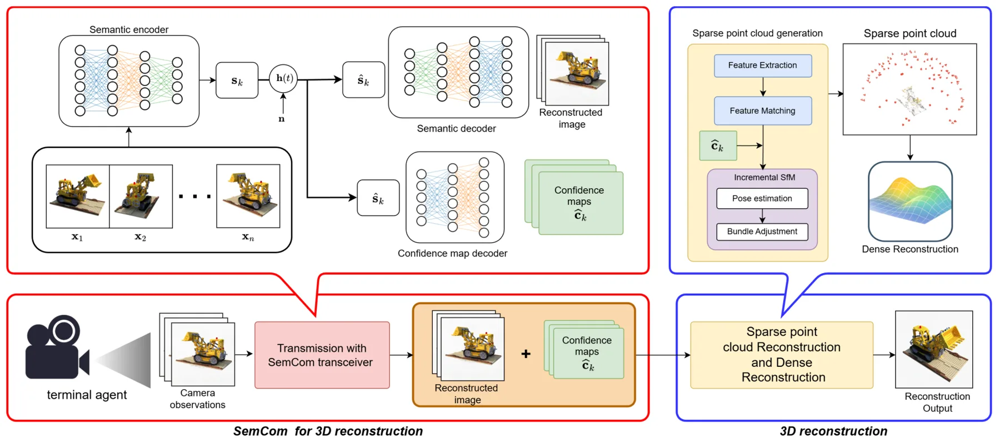
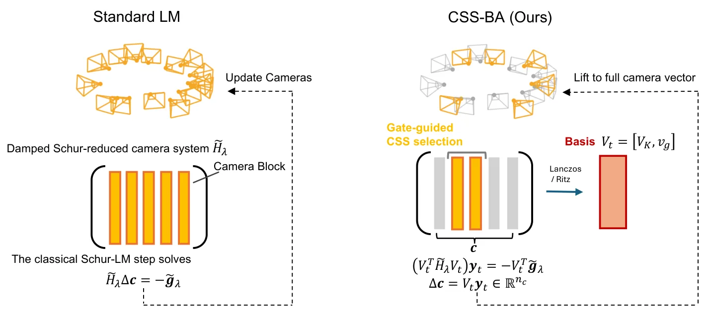
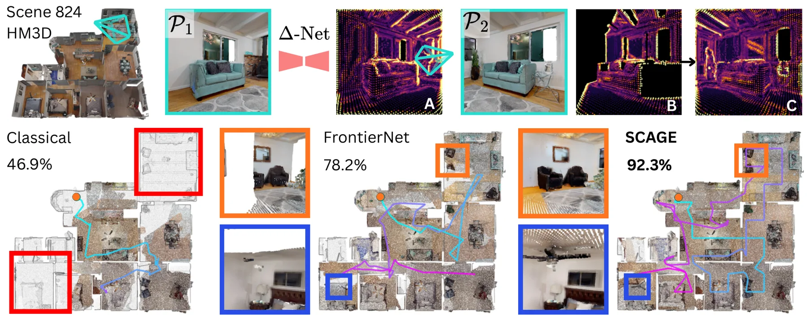
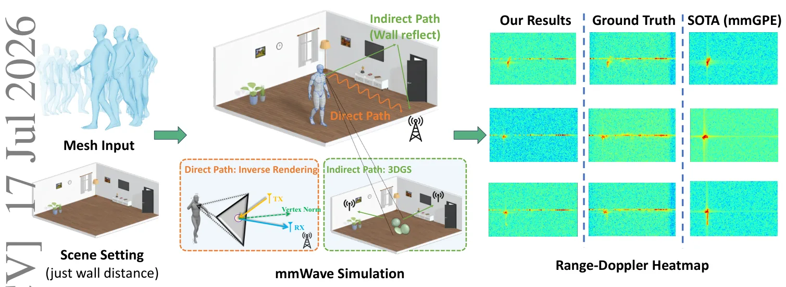

新论文 · 日期 2026-07-17 · score 15 · cs.CV, cs.LG
作者：Chankyo Kim, Maani Ghaffari
评分 9.1/10
3DGSSE(3) 等变球谐函数表示学习世界模型
一句话工作总结：把低阶球谐颜色精确映射为几何矩阵，与位置和协方差统一进行 SE(3) 等变处理。
3D Gaussian Splatting 同时包含位置、协方差等显式几何属性，以及由球谐函数表示的视角相关光度属性，但旋转对这些属性的作用形式不同，阻碍了严格的 SE(3) 等变建模。本文证明，对不高于二阶的球谐系数，Wigner-D 作用可精确改写为 3×3 矩阵的共轭作用，从而把几何与颜色统一提升到 gl(3) 载体空间。基于这一“颜色即几何”表述，E3DGS 无需 Clebsch–Gordan 张量积即可处…
3D Gaussian Splatting (3DGS) captures scenes by coupling explicit geometry (position, covariance) with view-dependent photometry (Spherical Harmonics). However, building $\mathrm{SE}(3)$-equivariant architectu…

新论文 · 日期 2026-07-17 · score 12 · cs.CV, cs.RO
作者：Damani Mguni-Coker
评分 9.3/10
3DGS持续重建变分贝叶斯实时建图在线学习
一句话工作总结：用局部截断推断和更高效的 Gaussian 重分配，把 VBGS 持续重建推进到约 20 FPS。
VBGS 通过坐标上升变分推断实现无需回放缓冲区的持续重建，但逐帧遍历全部已观测点带来严重延迟。ImprovedVBGS 引入空间截断变分推断，并通过 forwarding、truncation 和避免无效动态重编译改进基元重分配。在 RTX 3070 Ti 和 NeRF Synthetic 数据集上，平均每帧延迟由约 84 秒降至 0.050 秒，达到 1680 倍加速，同时保持重建质量。
On-the-fly reconstruction is a key requirement for many applications in robotics and autonomous navigation. Variational Bayes Gaussian Splatting (VBGS) enables continual learning without replay buffers using C…

新论文 · 日期 2026-07-18 · score 11 · cs.CV, cs.MA, cs.MM
作者：Fangzhou Zhao, Yao Sun, Xuesong Liu, Runze Cheng
评分 8.8/10
移动重建语义通信置信度RANSACBundle Adjustment
一句话工作总结：让通信端输出像素置信度，并把该可靠性显式注入 RANSAC 和 BA，增强弱链路下在线重建。
移动平台把连续图像传到服务器进行在线位姿和场景估计时，通信失真会破坏多视一致性。本文设计语义收发器，同时输出重建图像与像素级置信图，并将置信度用于 RANSAC 位姿初始化和 bundle adjustment，以降低不可靠区域的影响。仿真结果表明，相比现有语义通信以及传统信源—信道分离编码，该框架在保持图像质量的同时改善了位姿精度和三维结构一致性。
Real-time mobile 3D reconstruction is fundamental to many emerging applications such as autonomous navigation and digital twin construction, where a moving platform continuously captures an image stream and tr…

新论文 · 日期 2026-07-17 · score 9 · cs.CV
作者：Jian Huang, Haotian Shen, Xinhao Lou, Chengrui Dong
评分 8.9/10
事件相机前馈重建点云时空聚合自监督学习
一句话工作总结：结合事件体素、时间注意力和自监督掩码建模，直接输出全局对齐的事件相机三维点云。
Event3R 是把异步事件流直接映射为全局一致三维点云的前馈框架。系统把事件组织为时空体素，以时间注意力聚合动态特征；通过 Masked Bin Modeling 自监督预训练减少对大规模标注的依赖，并在微调时加入对比对齐和一致性正则，以强化跨视图结构对应与时间一致性。合成和真实基准实验显示，其重建的鲁棒性、时间一致性和全局对齐优于已有事件方法。
Robust 3D reconstruction is essential for robotics and embodied perception. Recent feed-forward approaches such as DUSt3R have demonstrated impressive progress in dense 3D reconstruction from RGB images, achie…

新论文 · 日期 2026-07-17 · score 8 · cs.CV
作者：Ayano Kaneda, Takafumi Taketomi, Shugo Yamaguchi, Shigeo Morishima
评分 9/10
Bundle Adjustment退化场景Schur-LM列空间搜索相机标定
一句话工作总结：不删状态、不改 BA 目标，只把 Schur-LM 更新限制到门控选择的几何可靠低维子空间。
低视差和近纯旋转条件下，经典基于 Schur 补的 Levenberg–Marquardt 容易病态，导致位姿与标定估计不可靠。Gate-Guided CSS-BA 保留原有 BA 目标与信赖域框架，但用几何感知门控把每次更新限制在信息更可靠的低维列空间。所有相机和点参数仍留在优化问题中，仅约束更新方向，因此可作为现有 BA 流水线的替换求解器。实验显示该方法在弱几何场景中优化更稳定、相对位姿更准确，同时保持重投影…
Bundle adjustment (BA) remains a critical refinement module for image-based 3D reconstruction and continues to improve geometric accuracy even in learning-based pipelines. However, in low-parallax and near-rot…

新论文 · 日期 2026-07-17 · score 6 · cs.RO, cs.CV
作者：Akash Kumbar, Abhinav Raundhal, Madhava Krishna
评分 8.4/10
自主探索主动建图点云下一最佳视点场景先验
一句话工作总结：以重建几何和室内结构先验之间的异常代替传统 frontier，主动选择能修补地图的观察位姿。
SCAGE 将未知环境探索重新表述为几何异常最小化，而非单纯追逐体素前沿。系统直接处理非结构化三维点云，利用对典型室内建筑结构的学习先验识别破碎墙面、局部桌面等与预期不一致的区域，并把这些异常作为下一视点选择信号，使机器人主动补全重建薄弱处。实验报告各场景约 90% 的体积覆盖率，并较先进基线获得更高的三维重建质量。
Autonomous exploration of unknown 3D environments is traditionally driven by coverage-maximizing geometric heuristics. However, these methods typically determine exploration targets without considering the und…

新论文 · 日期 2026-07-17 · score 4 · cs.CV
作者：Weitao Xiong, Tianyu Liu, Peng Li, Kok Chung Chua
评分 6.2/10
毫米波雷达数字孪生3DGS多路径物理仿真
一句话工作总结：用物理逆渲染建直接回波、用 3DGS 拟合场地多路径，低成本生成毫米波雷达数字孪生数据。
HybridSim 在固定室内房间中，从动态人体网格合成毫米波雷达信号，并把传播拆为直接路径和间接路径。直接路径使用带微表面 BRDF 的逆渲染建模主要表面反射；间接路径则结合 3D Gaussian Splatting 与虚拟接收器几何，拟合场地特定的多路径干扰，以低于完整光线追踪的成本复现传播。实验显示其与物理参考的一致性更好，并能通过场地特定数据增强改善下游人体感知。
High-fidelity simulation of mmWave radar signals for dynamic human motion is valuable for developing radar-based human sensing models; yet collecting accurately labeled measurements for a specific deployment s…